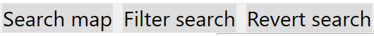
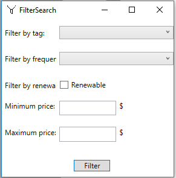
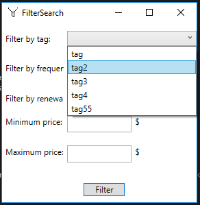
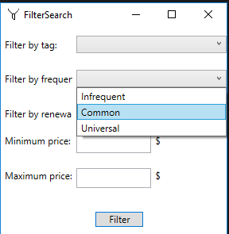
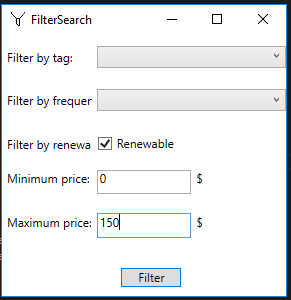
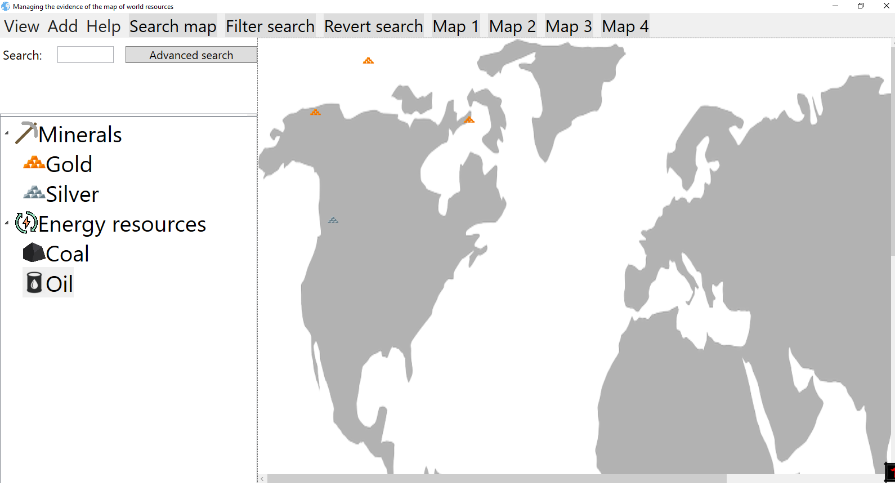

Filtering maps
search action you need to press button Filter map, or access filter window using shortcut CTRL+F

That action will open window that looks like this:

You can choose tag that already exists in order to find such resources.

You can choose frequency in order to find such resources.

You can choose between renewable and non-renewable resources.

You can choose any combination of parameters.
By pressing filter btn search engine gives you filtered set of maps that contains resources that fulfill filter parameter constraints.

On top toolbar filter and revert search button can be seen
Reverting search will happend when you press button Revert search. That action will return application to state before search